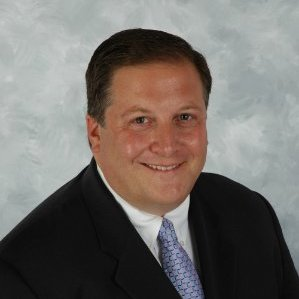

Dan Greenberg — Co-President

Dan joined Norman Hecht Research in the Spring of 1996. He heads up the analysis, consulting and client presentation responsibilities at Norman Hecht Research for both primary research and ratings consulting. These efforts are more than a full-time job as Dan spends a good deal of his time meeting with the company’s prestigious clients throughout the year. Dan’s strength in ascertaining client needs is matched by his ability to communicate actionable research findings in the most clear and comprehensive manner. These traits assist client management in achieving their strategic goals. Dan is often requested to give presentations at client group meetings. Dan also moderates many focus group discussions for our clients.
Prior to joining Norman Hecht Research, Dan worked for Petry Media Corporation. Dan began at Petry in the Fall of 1993 as a research analyst and swiftly ascended in position within the research department. After providing advertising sales and programming research for many of the top 50 television stations, including several of the NBC O&O’s, Dan was promoted to Senior Group Research Manager, Television Division.
Dan started his career in the Television/Entertainment industry on the creative side in Los Angeles. During that time, he did production work on several network television shows including “Coach” and “Princesses.”
Dan earned a Master’s degree in Communications from New York Institute of Technology.